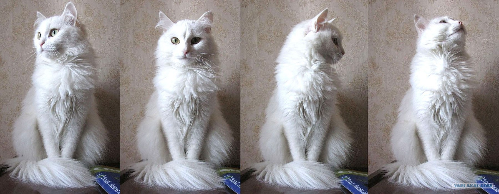

Этой породе уже много сотен лет, но где и когда она появилась – не могут пояснить даже фелинологи с многолетним опытом работы. Есть только догадки. Предполагается, например, что прародителем современных ангорских кошек был лесной кавказский кот, обитавший на территории Турции в средние века. Первоначально шерсть у турецкой ангоры была совсем короткой, но со временем, из-за генной мутации, она заметно удлинилась.
В письменных источниках об этих кошках стали упоминать в XV веке: этих красивых, но своенравных животных, могли позволить себе только люди обеспеченные, знатные. Разного цвета глаза считались признаком особой благосклонности богов, поэтому таких кошек почитали особо.
Удивительный факт: на родине турецких ангор официально признали только в 1975 году, когда порода стала угасать из-за беспорядочных смешиваний. В 1973 году порода получила международное признание, официальную регистрацию и стандарт. Несколько лет в статистике учитывались только белоснежные котята, сейчас же допускаются и другие окрасы. Турецкие власти запретили вывозить из страны белоснежных кошек.
Турецкая ангорская кошка обладает очень изысканной и в частности необычной внешностью. Гибкое вытянутое тело достаточно мускулисто и грациозно. Самки весят 2,5-3,5 кг, самцы могут быть крупнее в 2 раза.
Животные бывают длинношёрстными и полудлинношёрстными хотя раньше порода была короткошёрстной, но из-за мутации длина шерсти изменилась. Подшёрстка у животных быть не должно, профессионалы считают его наличие браком.
Ангора имеет много окрасов. Самым популярным цветом у породы является снежно-белый. Мочки и подушечки на лапах – розовые. Хотя есть очень много других окрасов, которые признаны международными стандартами:
У породы длинные, сильные конечности. Вытянутая шея. Лапки небольшие, овальные. Задние немного длиннее передних. Хвост может достигать размеров тела и даже чуть длиннее. Очень пушистый, заострённый к концу. Голова клиновидная с высокими скулами, прямой нос. Крупные, широко поставленные уши. На кончиках могут быть кисточки, внутри густой мех. Красивые большие слегка раскосой формы глаза. Бывают зелёные, жёлтые, голубые. Очень часто встречаются разноцветные глаза.
Ангорские кошки – это очень умные, сдержанные, интеллигентные, мудрые, ласковые и активные домашние питомцы. При этом они невероятно терпеливые и уживчивые, что позволяет им прекрасно ладить не только со взрослыми и детьми, но даже с собаками.
Это кошки, имеющие легкий нрав: общительные, но при этом ненавязчивые. Хорошо относятся ко всем членам семьи, но хозяином считают одного человека. Спокойно и смело относятся к гостям, не прячутся при их приходе, а, наоборот, выходят посмотреть. Не любят чрезмерной ласки, но всё же не отказываются от внимания.
Обычно питомец ведет себя спокойно, но иногда любит побегать, сшибая все на своем пути, поэтому желательно обеспечить достаточное пространство для игр.
